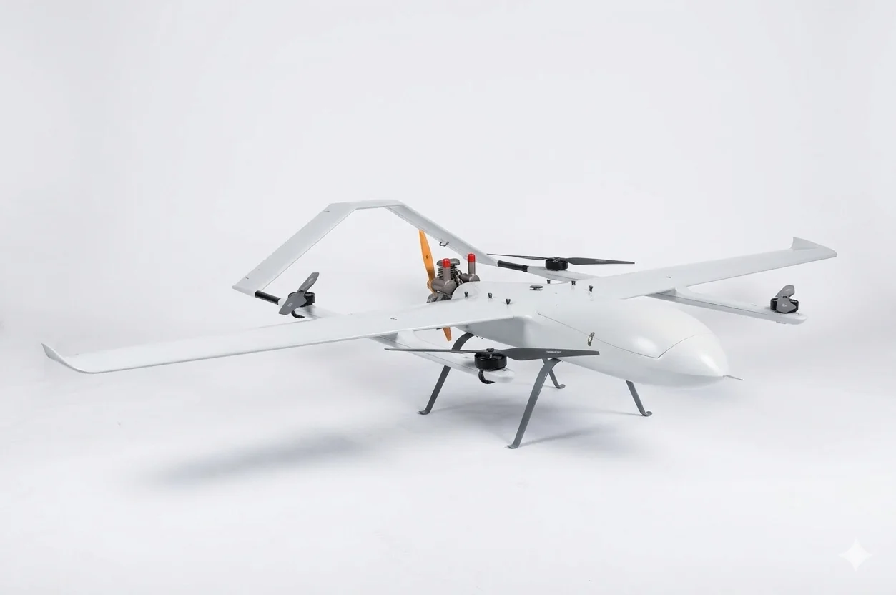

Sistemas
Plataformas desenvolvidas para transformar engenharia avançada em capacidade operacional, com arquitetura aberta, integração de sensores e configuração orientada à missão.

Montagem e integração UAV
Engenharia / Drones e UAVs
Da estrutura à
Da estrutura à
integração de voo.
Montagem técnica de drones, UAVs, VANTs e RPAs com integração de estrutura, propulsão, energia, aviônicos, comunicação, sensores e cargas úteis.
- Asa fixa, asa voadora, VTOL e configurações híbridas
- UAV Designer para pré-dimensionamento conceitual
- Montagem, configuração e verificações progressivas
 Tecnologia médica
Tecnologia médica
Software / Visus Pro 16.5
Do sinal de vídeo
Do sinal de vídeo
ao laudo.
Uma estação de trabalho para capturar, revisar e documentar exames com imagem, conectando paciente, mídia clínica, achados, histórico e laudo no mesmo fluxo.
- Câmera USB, HTTP Snapshot ou MJPEG, fotos, vídeos e clipes recentes
- Galeria, anotações, comparação visual, laudo estruturado e prévia do PDF
- Histórico, assistentes, indicadores, auditoria, backup e fila de metadados